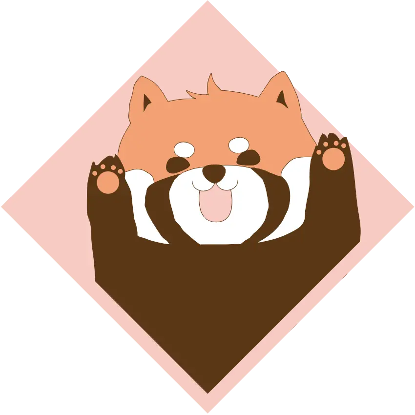

illustratorで人の心に響くデザインを目指しています。
イラストを描くのが好きです。
Career
- 過去 看護助手1年 → OPE看護師5年10カ月
- 現在 SHINBIデザインスクール 6カ月
- 将来 ユーザーの使いやすさを探求し、人の心に響くデザインを目指します
Skills
| HTML/CSS | 基本的な構造とスタイリング、レスポンシブ対応(勉強中) |
| JavaScript | 基本動作を学習中 |
| illustrator/Photoshop | バナー、DM、デザイン案、チラシ制作など |
| figuma | ワイヤーフレーム、プロトタイピング、コンポーネント制作 |
Strength
協調性
前職のOPE室看護師で、無事な手術終了をゴールにどのような状況下でも麻酔科医や執刀医など、多職種間とのコミュニケーションで安全な手術のお手伝いを行ってきました。この経験から、周囲をよく観察して自分には何ができるのか常に考えて行動することを心がけていました。貴社でもこの経験を活かし、チームにどう貢献できるか考えて精進して参りたいと考えます。
柔軟性
看護師退職後、SHINBIデザインスクールで最新のデザインの流行や技術を追い求める大切さを学びました。自分の固定概念に捕らわれずに、アンテナを張って柔軟にデザインに取り入れるようにしたいと考えます。
責任感
前職で、人の命を救う重大な責任感をもって仕事に勤しんで参りました。貴社でも締め切りを厳守する姿勢へ変換して貢献したいと考えます。